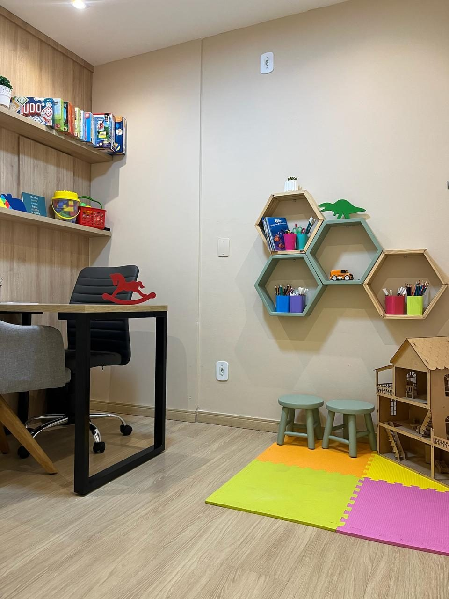
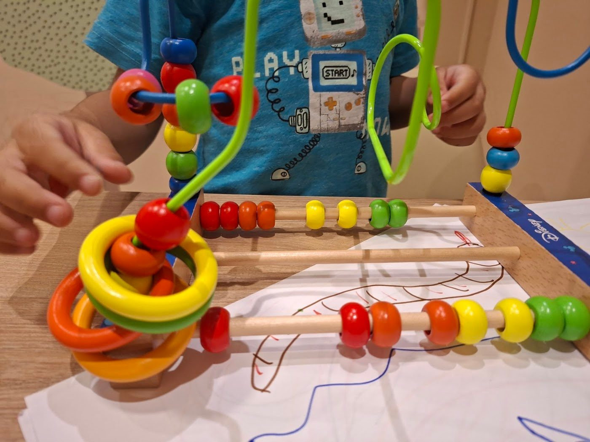
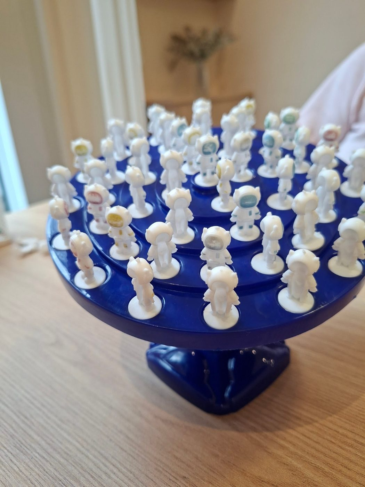
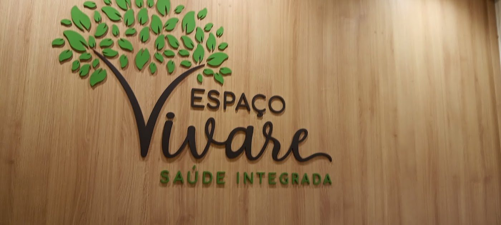
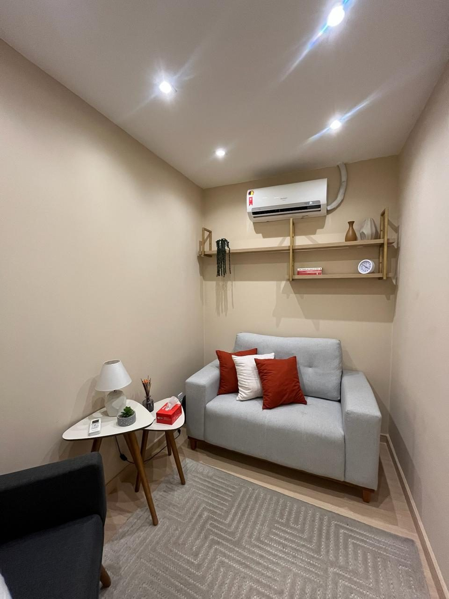
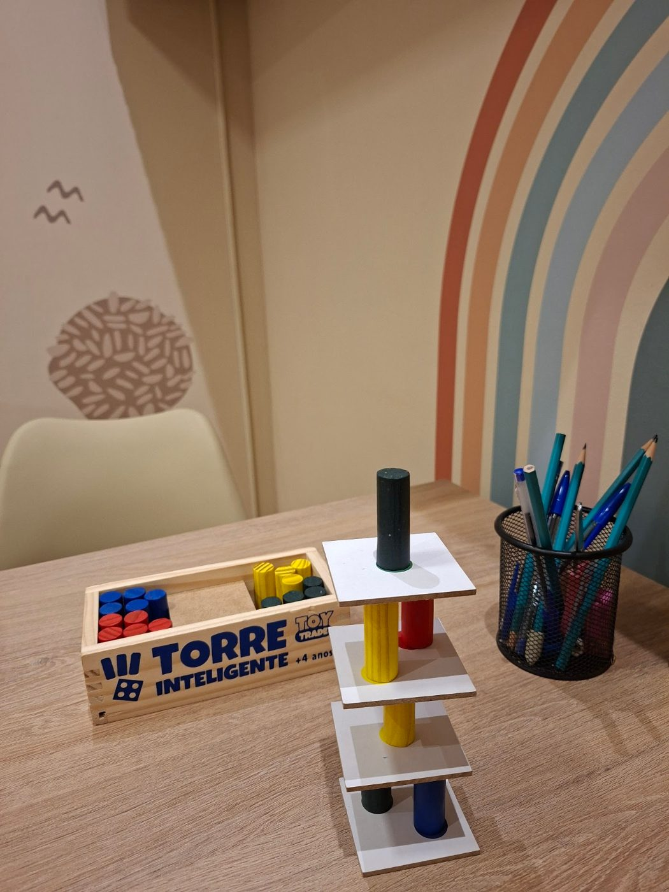
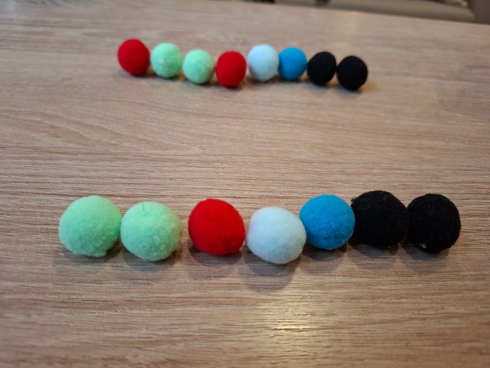
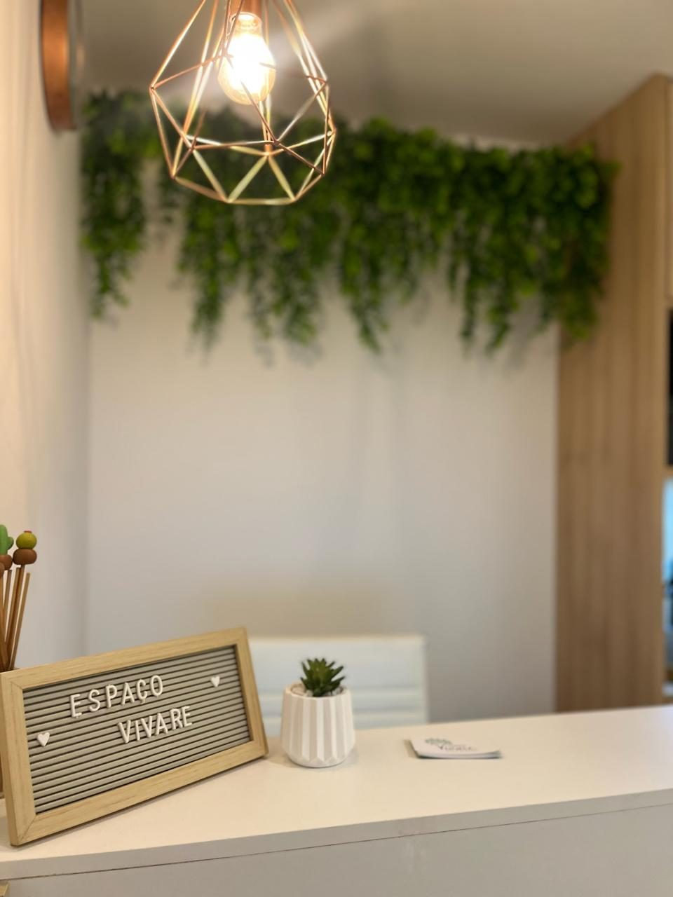
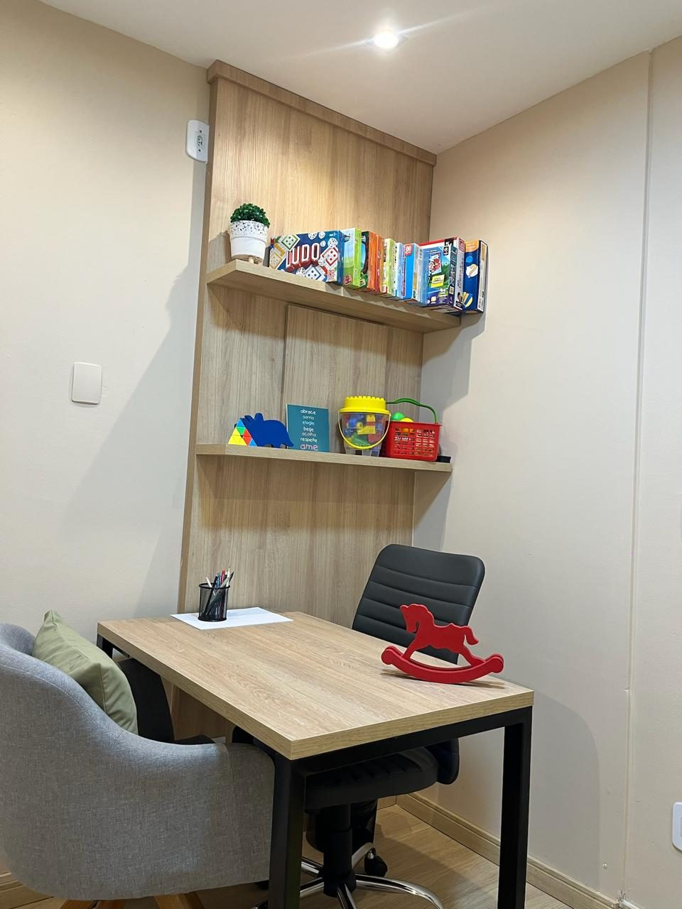

“Profissional excelente! A Fernanda conseguiu identificar as principais barreiras de aprendizagem da minha filha e desenvolveu estratégias que transformaram a relação dela com a escola. Hoje ela estuda com muito mais alegria e segurança.”
Psicopedagogia clínica · Centro de Niterói
Descomplique e potencialize o aprendizado do seu filho
Avaliação e acompanhamento psicopedagógico com olhar acolhedor, atenção aos detalhes e parceria com a família e a escola, respeitando o tempo de cada um.
- Psicopedagogia Clínica
- Neurociência e Comportamento Humano
- Orientação Familiar
5,0
38 avaliações no Google
Fique atento
Sinais na idade escolar
Alguns sinais podem indicar que a criança ou o adolescente precisa de um olhar psicopedagógico.
Dificuldade na leitura e escrita
Desatenção
Dificuldade em copiar de livros e lousa
Desorganização geral
Dificuldade em manusear mapas e dicionários
Dificuldade em ler em voz alta
Dificuldade em compreender o que foi lido
Baixa autoestima
Se a criança apresentar algum desses sinais, entre em contato. Quanto mais cedo receber suporte especializado, melhor para o seu desenvolvimento.
Como funciona
Um acompanhamento feito junto com a família
Conversa com os pais
O primeiro encontro é com os pais ou responsáveis, para entender a história e as necessidades da criança.
Avaliação cuidadosa
Avaliação psicopedagógica atenta aos detalhes, para identificar as barreiras de aprendizagem.
Intervenção personalizada
Estratégias, exercícios e brincadeiras pensados para cada paciente, respeitando o seu tempo.
Família e escola juntas
Orientação aos responsáveis e diálogo com a escola, acompanhando cada evolução.



Atendimento
Como posso ajudar
- Psicopedagogia clínicaAvaliação e intervenção nas dificuldades de aprendizagem, como leitura, escrita, atenção e organização.
- Neurociência e comportamento humanoUm olhar sobre como o cérebro aprende, para potencializar o desenvolvimento de cada pessoa.
- Orientação familiarApoio aos pais e responsáveis para acompanhar e estimular o aprendizado em casa.
CriançasAdolescentesAdultosIdosos
Sobre
Prazer, sou a Fernanda
Sou psicopedagoga clínica e atendo no Centro de Niterói. Amo atender, intervir e acompanhar a evolução de cada paciente, junto aos familiares, responsáveis e à escola.
“Não há como ser psicopedagoga sem colocar uma pitada de amor e empatia.”Fernanda Prado@psicopedfprado
O espaço
Um ambiente aconchegante e acolhedor
Atendimento no Espaço Vivare Saúde Integrada, no Edifício Gallery Center, Centro de Niterói.






AcessívelEntrada para cadeira de rodas
Para todosEspaço que acolhe a comunidade LGBTQ+
PagamentoCrédito, débito e aproximação
Depoimentos
O que as famílias dizem
5,0 · 38 avaliações no Google“Desde a primeira consulta, que é com os pais, já deu para notar a diferença do trabalho dela. A atenção aos detalhes e as perguntas direcionadas trouxeram a segurança que estávamos procurando. […] A melhora nas notas na escola já foi perceptível ainda na fase de avaliação.”
“Ótima psicopedagoga! Super atenciosa e ama seu trabalho. Ela acompanha o desenvolvimento do seu filho/a no aspecto social/emocional assim como ajuda no desempenho escolar. Acolhe bem os seus pacientes com ética e respeito. Recomendo 100%!”
“Fernanda é uma profissional maravilhosa! Muito atenciosa, prestativa, responsável e muito humana. Ela está sempre criando um ambiente seguro e acolhedor para o responsável e o paciente. Com minha filha está dando muito certo, vejo melhoras diárias nela.”
“Fernanda, é uma profissional muito acolhedora, atenciosa e dedicada. Realiza uma avaliação cuidadosa, explica o diagnóstico com clareza e conduz o tratamento de forma personalizada e humanizada. Transmite muita confiança e segurança. Recomendo!”
“Excelente espaço, atendimento maravilhoso e profissionais muito competentes. Minha filha amava o dia que tinha consulta com a Fernanda, ela ajudou muito a minha filha, vi a evolução dela em pouco tempo.”
Contato
Chamar no WhatsApp
Vamos conversar?
Agende uma avaliação pelo WhatsApp. Será um prazer receber vocês.
WhatsApp(21) 96774-2170
EndereçoR. da Conceição, 154 – Salas 701, 702 e 703
Ed. Gallery Center · Centro, Niterói – RJ, 24020-084
Ed. Gallery Center · Centro, Niterói – RJ, 24020-084
Horários
Seg a Sex8h às 20hSábado8h às 14hDomingoFechado
Instagram@psicopedfprado
FacebookPsicopedagoga Fernanda Prado